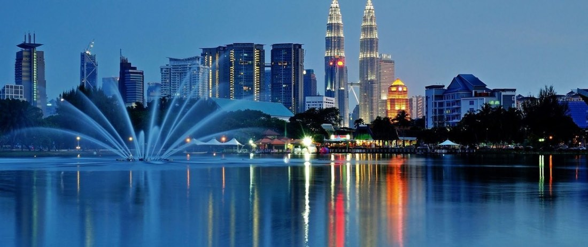

Singapur, Malezya ve Bali Turu
Tur bilgileri
- Tarih
- 14.11.2026 – 22.11.2026
- Süre
- 9 gün
- Güzergâh
- Singapur, Johor Bahru, Melaka, Kuala Lumpur, Bali (Endonezya)
- Otel
- 5 Yıldız
- Vize
- Singapur ve Malezya vizesiz; Endonezya (Bali) varışta vize
- Ulaşım
- Uçak
- Havayolu
- Türk Hava Yolları, Yerel havayolu
Rota haritası
Şehir etiketine dokunun; programın o günü açılsın.
Fiyatlar
| İki Kişilik Odada Kişi Başı | $3.950 |
|---|---|
| Tek Kişilik Oda | $4.550 |
| İlave Yatak | $3.950 |
| 0 - 1 Yaş | $250 |
|---|---|
| 2 - 5 Yaş | $3.600 |
| 6 - 11 Yaş | $3.875 |
* Fiyatlar kişi başı, USD; tüm yurt dışı yerel vergiler dahildir.
* 8 gece / 9 gün (7 gece konaklamalı).
* Vize şartları değişebilir; seyahatten önce T.C. Dışişleri Bakanlığı ve Endonezya Büyükelçiliği duyurularından teyit edin.
Tur programı
1. Gün: İstanbul – Singapur
İstanbul Yeni Havalimanı Dış Hatlar Terminali Giden Yolcu Salonu "THY" bankosunda 13.15’te buluşuyoruz. Check-in ve pasaport işlemlerini müteakip Türk Hava Yolları’nın TK208 seferi ile 17.15’te Singapur’a uçuyoruz (10sa 30dk). (Uçuş saatleri havayoluna bağlı olarak değişebilir.)
2. Gün: Singapur
Varış: 08.45. Varışın ardından yapacağımız Singapur şehir turumuzda Sultan Camisi, marina ve çevresi, Çin Mahallesi, meşhur alışveriş caddesi Orchard Road ve Merlion Heykeli göreceğimiz yerler arasındadır. Ziyaretimizin ardından Marina Bay Sands SkyPark gözlem terasını ziyaret ediyoruz. Akşam yemeği sonrası konaklama otelimizde. 5* Orchard Hotel Singapore, 5* Grand Copthorne Waterfront Hotel Singapore vb.
Önemli: Singapur’a varış erken saatte olacak ve direkt geziye başlanacaktır. Otele girişler en erken öğleden sonra başladığından; akşama kadar gezi yapılacaktır. Misafirlerimizin bu durumu göz önünde bulundurarak tura katılmaları gerekmektedir.
3. Gün: Singapur – Johor Bahru
Otelde alacağımız kahvaltının ardından Sentosa Adası’nda Hollywood’dan ilham alan tematik alanları, adrenalini yüksek eğlence üniteleri ve dünyaca ünlü film konseptleriyle Asya’nın en popüler tema parklarından biri olan Universal Studios (giriş ücreti dahil) tema parkını ziyaret ediyoruz. Gezimizin ardından Johor Bahru’ya hareket ediyoruz (35 km). Akşam yemeği sonrası konaklama otelimizde. 5* Amari Hotel, 5* Forest City Golf Hotel vb.
4. Gün: Johor Bahru – Melaka – Kuala Lumpur
Otelde alacağımız kahvaltının ardından Melaka’ya doğru yola çıkıyoruz (215 km). Malakka şehir turumuzda Melaka Camisi, A’famosa Kalesi, Stadhuys ve St. Paul Kiliseleri göreceğimiz yerler arasındadır. Gezimizin ardından tekne turu sonrası Kuala Lumpur’a hareket ediyoruz (145 km). Varışta Batu Mağarası'nı ziyaretin ardından akşam yemeği sonrası konaklama otelimizde. 5* Royal Signature Hotel, 5* Hotel Maya Hotel vb.
5. Gün: Kuala Lumpur – Bali
Otelde alacağımız kahvaltının ardından Kuala Lumpur şehir turumuzda Petronas Kuleleri (dışarıdan), Ulusal Cami, Merdeka Meydanı, Sultan Abdul Samad Binası (dışarıdan), Central Market ve Tac Mahal mimarisinde yapılmış Tren İstasyonu (dışarıdan) görülecek yerler arasındadır. Gezimizin ardından yerel havayolları ile Kuala Lumpur Havalimanı’ndan Endonezya'nın Bali şehrine uçuyoruz (3sa 20dk). Akşam yemeği sonrası konaklama otelimizde. 5* Hotel Nikko Bali Benoa Beach, 5* Merusaka Nusa Dua Hotel, 5* Ayodya Resort Nusa Dua vb.
6. Gün: Bali – Maymun Ormanı – Ubud – Alas Harum
Otelde alacağımız kahvaltının ardından tropikal orman dokusu içerisinde yaşayan yüzlerce maymuna ev sahipliği yapan Maymun Ormanı'nı ziyaret ediyoruz. Ziyaretimizin ardından rengârenk tezgahları ve otantik atmosferi ile ünlü Ubud Çarşısı'na hareket ediyoruz. Öğle yemeğimizin ardından Bali'nin eşsiz doğa manzaralarıyla öne çıkan popüler noktalarından Alas Harum Pirinç Terası'nı ziyaret ediyoruz. Bölge, dev salıncakları, kahve plantasyonları ve yemyeşil vadi manzaralarıyla unutulmaz kareler sunmaktadır. Gezimizin ardından akşam yemeği sonrası konaklama otelimizde.
7. Gün: Bali – Helikopter Turu – Safari Park
Otelde alacağımız kahvaltının ardından Bali'nin eşsiz doğasını gökyüzünden keşfetme fırsatı sunan 10 dakikalık Helikopter Turu (dahil) gerçekleştiriyoruz. Ardından egzotik hayvan türleri ve doğal yaşam alanlarıyla Bali’nin en popüler tematik parklarından biri olan Bali Safari Park’ı ziyaret ediyoruz. Park içerisinde Bali’nin tropikal doğasını yakından keşfetme fırsatı bulacağız. Gezimizin ardından akşam yemeği sonrası konaklama otelimizde.
Önemli: Her helikoptere 4 kişi binilmektedir. Oturma düzeni önden arkaya doğru 1-3 şeklindedir. Her koltuğun konforu ve görüş açısı farklı olabilir. Hiçbir misafirimize belirli bir koltuk sözü verilmemektedir.
8. Gün: Bali – Handara Kapısı
Otelde alacağımız kahvaltının ardından serbest zaman sonrası yeşil dağlar ve tropikal manzaralarla çevrili Handara Kapısı’na hareket ediyoruz. Doğayla bütünleşmiş bu etkileyici kapının önünde fotoğraf çekilmek için serbest zaman sonrası Beratan Gölü kıyısında yer alan ve manzarasıyla büyüleyen Ulun Danu Beratan Tapınağı’nı ziyaret edeceğiz. Gezimizin ardından akşam yemeği sonrası konaklama otelimizde.
9. Gün: Bali (Denpasar) – İstanbul
Otelde alacağımız kahvaltının ardından Uluwatu Tapınağı’na hareket ediyoruz. Kayalık uçurumların kenarına 11. yüzyılda inşa edilen tapınak, bu büyüleyici sahil ortamında antik hayata bir bakış sunuyor. Deniz seviyesinden 70 metre yükseklikten Hint Okyanusu'nun manzarasının keyfini çıkarıp tapınakta yaşayan maymunlarla zaman geçirme imkânı bulacaksınız. Gezimizin ardından Denpasar Ngurah Rai Havalimanı’na hareket ediyoruz. Türk Hava Yolları’nın TK67 seferi ile 21.10'da İstanbul’a uçuyoruz (13sa). (Uçuş saatleri havayoluna bağlı olarak değişebilir.)
Fiyata dahil olanlar
- Türk Hava Yolları ile İstanbul / Singapur - Bali / İstanbul gidiş-dönüş ekonomi sınıfı uçak bileti ve vergileri
- Yerel havayolu ile Kuala Lumpur / Bali arası tek yön ekonomi sınıfı uçak bileti ve vergileri
- 7 gece 5 yıldızlı otellerde konaklama
- 7 kahvaltı ve 7 akşam yemeği
- Malezya'da Melaka tekne turu
- Singapur'da Universal Studios, Marina Bay Sands SkyPark Gözlem Terası giriş ücretleri
- Bali'de Helikopter Turu, Bali Safari Park, Handara Kapısı, Ulun Danu Beratan Tapınağı, Alas Harum Pirinç Terası, Maymun Ormanı, Uluwatu Tapınağı giriş ücretleri
- Programda adı geçen tüm transferler
- Türkçe rehberlik hizmeti
- Seyahat sigortası
- Tüm yurt dışı yerel vergiler
Fiyata dahil olmayanlar
- Diğer şehirlerden İstanbul'a iç hat bağlantı uçuşu ücreti
- Öğle yemekleri ve tüm yemeklerde alınan kapalı su ve kapalı içecekler
- Yurt dışı çıkış harcı
- Program dışı talep edilecek turlar
- Kişisel harcamalar, otel ekstraları (oda servisleri, telefon vb.), bahşiş
- Programda dahil olduğu açıkça belirtilmemiş her türlü hizmet